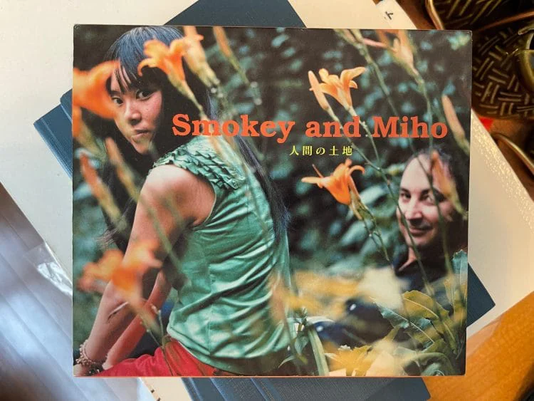

Subcultures. Shadows. Streetlight reflections. This edition of BAMUN dives into the unfiltered rhythms of Tokyo. We trace fashion not on the runways, but in alleys, basements, subway stations — where identity lives between layers of cloth and silence.
photo: Mikito Iizuka styling: Shinichi Sakagami hair and make: Yoshikazu Miyamoto text: POPEYE edit: Ryoko Iino August 2025 Issue 940 first released
Popey Music Forum Vol.18
The history of bags and the progress of ace learned at the "World's Bag Museum". 2025.07.11
Culture
Exploring subculture through fashion and form
July 2025
June 2025
May 2025
May 2025
Issue 07 Tote
Soft Tee
Print Zine